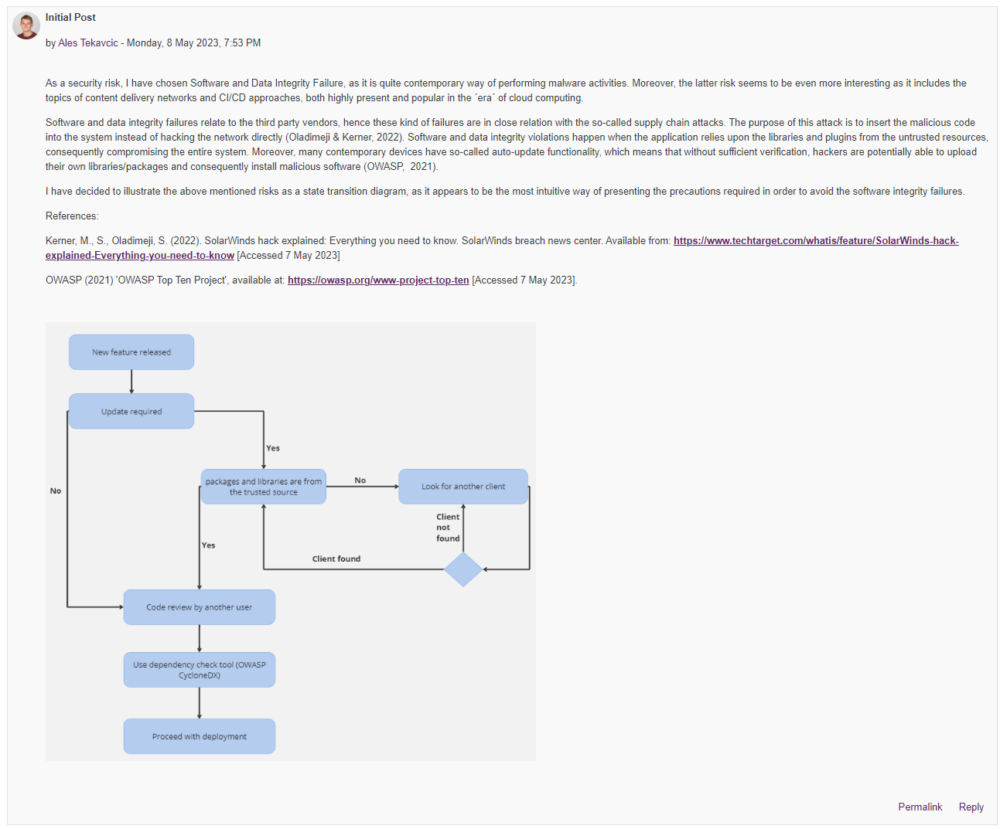
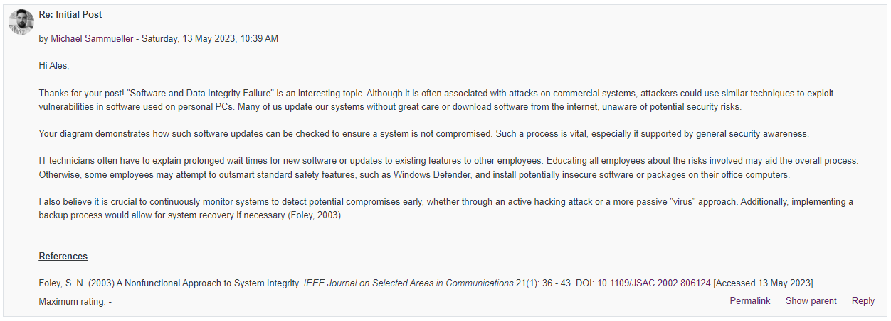
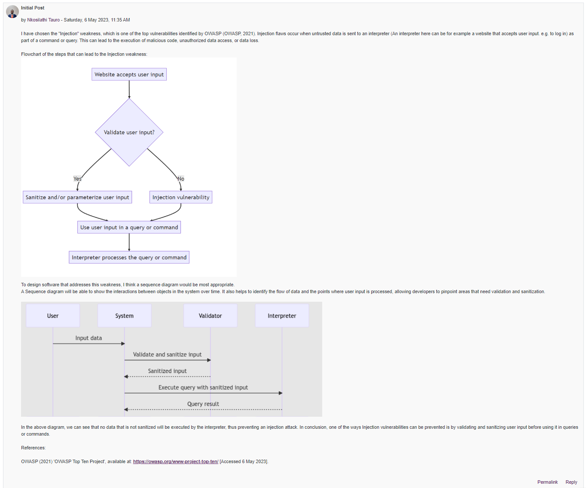
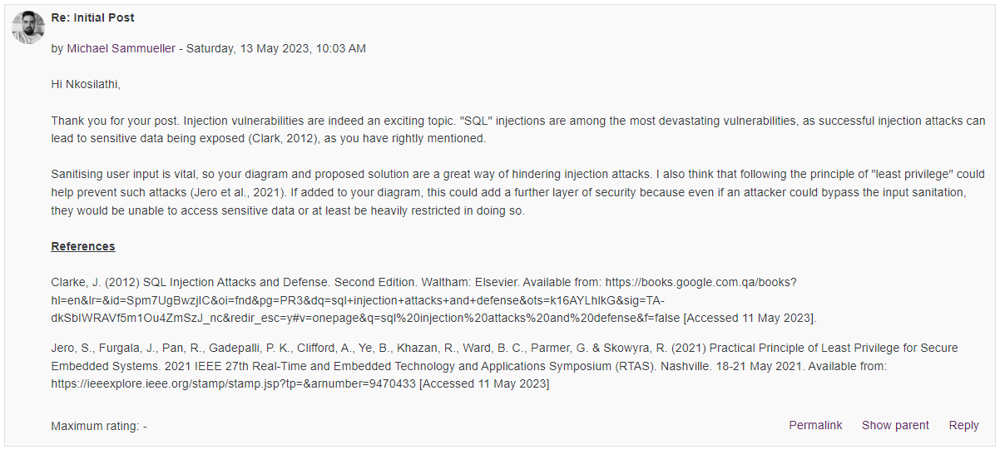
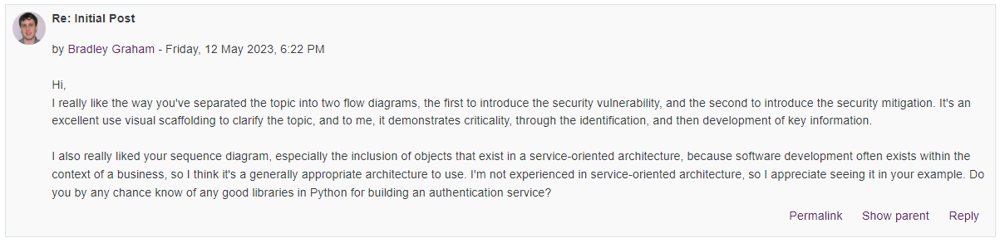
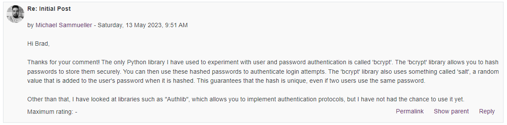
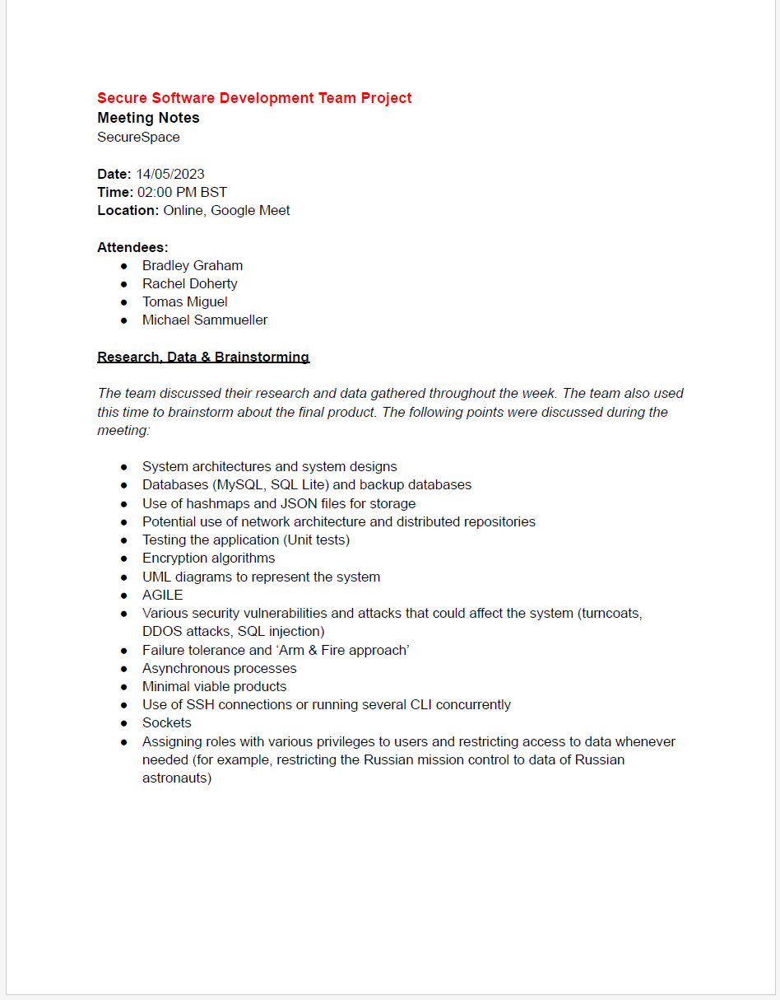
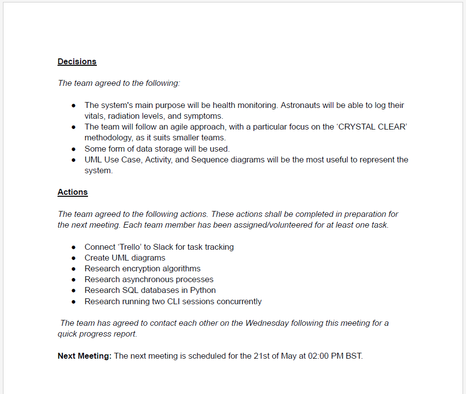
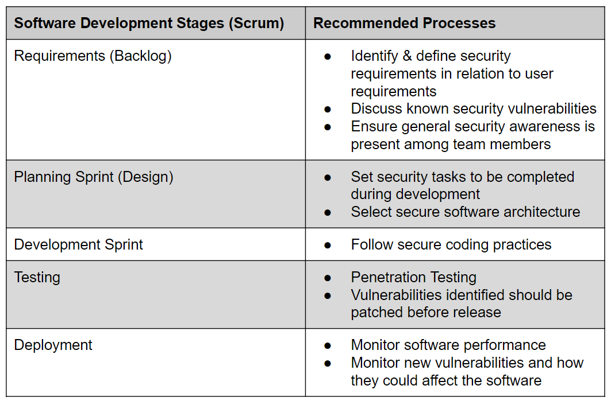
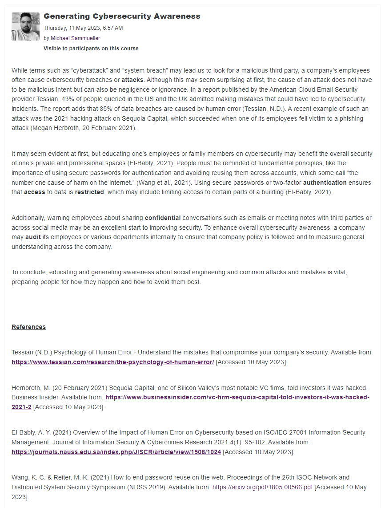

Unit 2: Artefacts
Collaborative Discussion
Part of this unit was to continue the collaborative discussion in Unit 1, and to respond to two of our peer's contribution.
Peer Post 1
My response
Peer Post 2
My response
Developments on my initial post
One of my peers responded to my initial post, to which I responded as well. It's great to be able to exchange information and ideas via the forum.
My response
Team Meeting
This week, my team met again to discuss our research tasks of the previous week. We decided on what our application would be like (Astronaut Health Monitoring System), and discussed how to proceed.
Meeting Notes
I recorded the following meeting notes:
 Seminar 1 Preparation
Question 1
Create a 2-column multi-line table. In the left-hand column, inlude the software development stages of the SCRUM agile life cycle approach to project management. In the right-hand column, describe the processes which you recommend are applied at each stage to ensure that secure software is produced at the end of the development.
Question 2
Some say that people are the biggest risk of cyber security. Select five terms from ISO/IEC Standard 27000 Section 3 Terms and Definitions and write a 300-word blog post on how people can be managed to overcome cyber security attacks from the inside.
